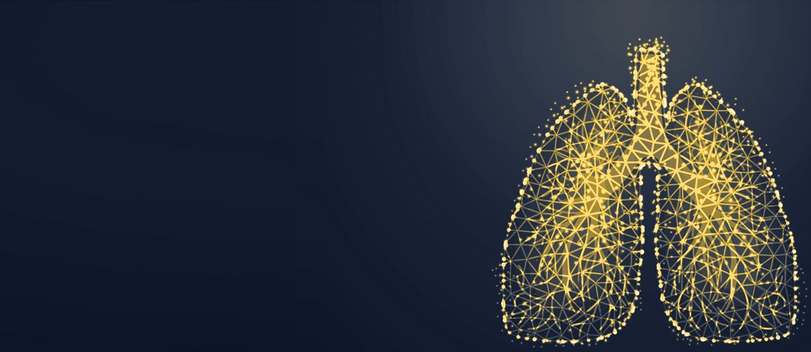

Pneumonia Diagnosis Tool
Elinext built a lung-image analysis tool with Python, TensorFlow, OpenCV, and Docker.
View case studyPrepared for Raymond Ha
Saw Akura hiring senior and principal medical imaging engineers. NavIQ and Katana are also moving through trial and funding work. Here is where a small outside squad could reduce delivery load.
Akura is scaling software around a device, not only adding web pages. The Staff and Principal imaging roles point to 3D CT angiogram work for NavIQ. That likely means DICOM ingest, vessel modeling, review tools, and validation all meet at once. If that load sits on a small core team, trial support and regulatory evidence can slow. The public product page also asks clinicians to trust live procedural feedback from Sentinel, so software quality has to feel exact.
NavIQ is described as turning CT angiograms into 3D pulmonary vascular models.
Map DICOM import, clot notes, and review outputs before adding more features.
The Katana product page is image-heavy and slow to show main content.
Compress media and defer scripts so physician research feels faster on mobile.
Team shape: 1 imaging tech lead, 2 C++/Python engineers, 1 QA automation engineer, 1 DevOps engineer.
Trace CT inputs, model output, and clinician review needs for NavIQ before adding more features.
Build automated checks for DICOM edge cases, segmentation outputs, and clot notes regulators can review later.
Create a repeatable test pack for Sentinel console data, pressure signals, and blood loss estimates.
Clean the product page media path so trial-site buyers reach Katana details faster on mobile.
Elinext is a full-cycle software development company, founded in 1997, with about 700 in-house specialists. We do not use freelancers or subcontractors. For regulated work, ISO 9001 and ISO 27001 matter for process and security. Teams have served Broadcom, Siemens, Volkswagen, TRUMPF, TUI, Parrot, and TransPerfect. For Akura, we would bring a senior medical software squad into your existing roadmap, with Raymond's team still owning product choices.

Elinext built a lung-image analysis tool with Python, TensorFlow, OpenCV, and Docker.
View case study
Elinext helped build and test live clinical-trials software with C#, .NET, and Angular.
View case studyShare one imaging bottleneck. We will map the first pilot scope.
Start the conversation